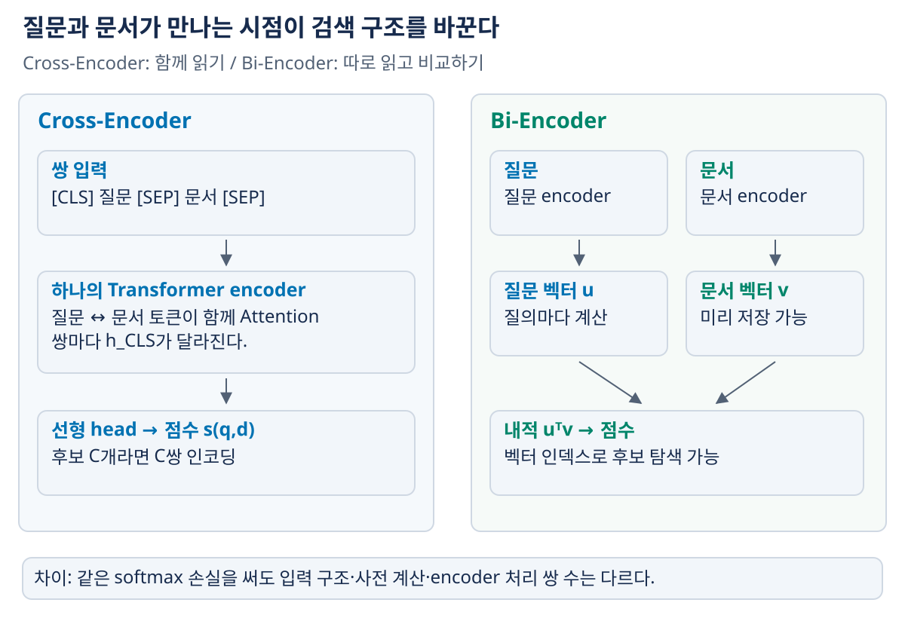
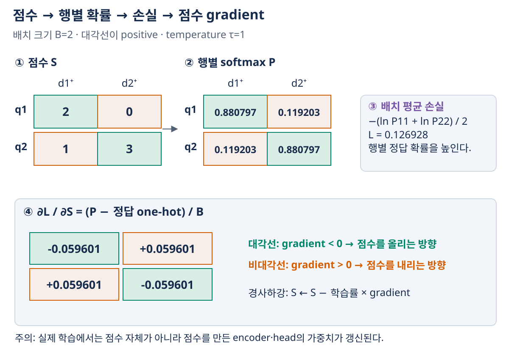

04. 신경검색과 검색기 학습
이전: 검색 평가지표 · 학습 안내 · 다음: 벡터검색과 인덱스
BM25는 같은 term을 쓰는 문서를 잘 찾지만, 단어가 달라도 관련 있는 문서를 놓칠 수 있다. 신경검색은 질문과 문서가 관련될수록 높은 점수를 내도록 표현과 점수 함수를 학습한다. 중요한 선택은 ‘BERT를 쓰는가’만이 아니다. 질문과 문서를 언제 만나게 하는지에 따라 사전 계산·검색 비용·표현력이 달라진다.
1. 검색에서 Transformer·BERT가 하는 일
토큰화된 문장을 Transformer encoder에 넣으면 토큰마다 문맥을 반영한 벡터를 얻는다. BERT의 양방향 Attention은 입력에 함께 주어진 토큰들이 서로를 참조하게 한다. 검색에서는 이 문맥 표현으로 질문·문서의 관련성 점수를 만든다.
[CLS] 위치 벡터를 대표 표현으로 사용하거나 pooling을 할 수 있지만, 사전학습 BERT에서 벡터를 뽑았다는 사실만으로 검색에 적합한 거리가 보장되지는 않는다. 어떤 데이터와 손실로 관련성을 학습했는지가 중요하다. BERT 사전학습의 masked token 예측과 검색기의 positive 문서 판별은 다른 학습 목표다.
검색에 필요한 encoder의 최소 계산
배치 크기를 $B$, 토큰 길이를 $T$, hidden 폭을 $H$라고 하자. 토큰 ID는 보통 $B\times T$ 정수 배열이고, 토큰·위치 등의 embedding을 합하면 $X\in\mathbb R^{B\times T\times H}$가 된다. BERT의 쌍 입력에서는 문장 구분용 segment 정보도 사용할 수 있다. padding으로 채운 위치는 Attention mask로 배제해 실제 단어처럼 참조하지 않게 한다.
Attention head 하나는 토큰 표현을 서로 다른 행렬로 투영해 $Q=XW_Q,K=XW_K,V=XW_V$를 만든다. 한 입력 안에서의 계산은 다음과 같다.
$h$는 head의 query·key 차원이고, $M$은 참조할 수 없는 위치를 막는 mask다. 한 행의 Attention 가중치 합은 1이고, $Z$는 그 가중치로 Value를 더한 결과다. 여기서 Attention의 $Q$는 토큰 내부 연산의 역할 이름이며, 검색 사용자 질문 $q$와 같은 배열이라는 뜻은 아니다. 여러 head의 결과를 결합하고 feed-forward·정규화·잔차 연결을 반복해 문맥 표현을 만든다. 최종 토큰 표현은 $B\times T\times H$, [CLS] 위치만 고르면 $B\times H$다.
예를 들어 한 위치의 스케일·mask 적용 뒤 점수가 [ln 3, 0]이면 softmax는 [3/4,1/4]다. 두 Value가 (2,0), (0,4)이면 출력은 0.75×(2,0)+0.25×(0,4)=(1.5,1)이다. 가중치의 합은 1이지만 출력 벡터의 좌표 합이 1이어야 하는 것은 아니다. Attention은 다른 위치의 정보를 비율에 따라 섞어 현재 토큰 표현을 만드는 과정이다.
BERT는 왼쪽부터 다음 토큰을 생성하는 decoder와 달리 입력에 주어진 앞뒤 토큰을 함께 참조하는 encoder다. 대표적인 사전학습 목표 MLM(Masked Language Modeling)은 일부 토큰을 가리거나 변형해 놓고, 그 위치의 원래 토큰을 어휘 중에서 맞히는 것이다. MLM head는 $H$차원 표현을 어휘 크기 $V_{vocab}$개의 logit으로 바꾸고, 선택된 정답 위치에서 교차엔트로피를 계산한다. 어휘 크기는 위 Attention의 Value 행렬 $V$와 다른 기호다. padding이나 학습 대상으로 선택하지 않은 위치까지 같은 정답 토큰 예측 손실에 넣는 것은 아니다.
검색 미세튜닝은 정답의 종류를 바꾼다. MLM의 정답은 토큰 ID이고, 아래 검색 손실의 정답은 현재 질문에 관련된 후보 문서의 위치다. BERT의 문맥 표현 위에 점수 계산을 연결한 뒤, 관련 문서가 무관한 문서보다 높은 점수를 내도록 encoder·점수 head를 학습한다.
softmax와 교차엔트로피를 먼저 구별하기
실수 점수 $s_1,\dots,s_m$을 확률로 정규화하는 연산이 $p_j=e^{s_j}/\sum_ke^{s_k}$다. 합은 1이지만 값은 후보 집합이 바뀌면 달라진다. 정답 후보가 $j^*$이면 교차엔트로피는 $-\ln p_{j^*}$다. 정답 확률이 1에 가까울수록 손실이 작다. 수치 계산에서는 최댓값을 모든 점수에서 뺀 뒤 지수화해도 같은 확률이므로 overflow를 줄일 수 있다. 6절에서 점수·확률·손실·gradient를 한 예제로 연결한다.
2. Cross-Encoder: 함께 읽고 점수 하나를 낸다
질문 $q$와 문서 $d$를 한 입력으로 합친다.
[CLS] 질문 토큰들 [SEP] 문서 토큰들 [SEP]
↓ BERT encoder
h_CLS ∈ R^H
↓ 학습하는 선형 head
s(q,d) ∈ R
$H$는 hidden 차원이다. 질문 토큰과 문서 토큰은 encoder 안에서 서로 Attention할 수 있다. 따라서 은행이 금융기관인지 강가인지처럼 문맥·조건·표현 관계를 함께 살필 수 있다. 이것이 반드시 모든 데이터에서 가장 정확하다는 뜻은 아니지만, 상호작용을 풍부하게 계산할 구조를 가진다.
문서 $d$가 같아도 $q$가 달라지면 $h_{CLS}(q,d)$가 달라진다. 문서마다 고정된 벡터 하나를 미리 저장해 내적만 하는 방식으로 이 일반적인 Cross-Encoder 점수를 그대로 재현할 수 없다. 그러므로 보통 빠른 검색기가 뽑은 후보를 다시 평가하는 reranker 역할로 사용한다.
3. Bi-Encoder·DPR: 따로 읽고 나중에 비교한다
질문과 문서를 독립적으로 인코딩한다.
오프라인: 각 문서 → 문서 encoder → 문서 벡터 → 벡터 인덱스
질의 시점: 질문 → 질문 encoder → 질문 벡터 → 인덱스 검색 → 후보
두 encoder는 역할이 나뉘지만 반드시 서로 다른 가중치여야 하는 것은 아니다. 모델에 따라 공유할 수도 있다. DPR은 이러한 독립 인코딩 구조의 대표적인 검색 방식이다. 내적 대신 cosine을 쓸 수도 있으며, 학습·인덱싱·질의가 같은 정규화·점수 규칙을 사용해야 한다.
문서 벡터는 질문에 의존하지 않아 미리 계산할 수 있다. 질의마다 문서 encoder를 다시 돌리는 비용을 줄이고 ANN 인덱스를 사용할 수 있다. 대신 하나의 벡터로 압축한 표현 사이의 비교만으로 세밀한 질의·문서 상호작용을 모두 보존하기 어렵다.
같은 ‘밀집 검색’이라고 한데 묶지 않기
| 항목 | Cross-Encoder | Bi-Encoder |
|---|---|---|
| encoder 입력 | 질문·문서를 합친 쌍 | 질문·문서를 각각 입력 |
| 질문·문서가 만나는 지점 | Transformer 내부 | 최종 벡터 점수 계산 |
| 문서 표현의 질문 의존성 | 있음 | 없음 |
| 문서 벡터 사전 계산 | 고정 단일 벡터로 일반 점수 재현 불가 | 가능 |
| 일반적 역할 | 후보 재정렬 | 대규모 1차 후보 검색 |
| 주요 비용 | 후보마다 쌍 encoder 실행 | 질문 encoder와 벡터 검색 |

그림 읽기: 왼쪽은 위에서 아래로 (질문,문서) 쌍 하나를 따라가고, 오른쪽은 두 encoder 경로가 마지막 내적에서 만나는 지점을 본다. 오른쪽 문서 경로만 질문 전에 실행할 수 있다는 것이 사전 계산의 핵심이다. 두 모델이 같은 종류의 Transformer를 쓴다고 해서 입력 구조·캐싱·연산 재사용이 같아지는 것은 아니다.
Cross-Encoder는 신경망으로 관련성을 계산하지만 이것이 곧 ‘문서 벡터 ANN 검색’이라는 뜻은 아니다. 반대로 dense라는 말은 표현이 조밀하다는 분류이지 좌표에 정확히 0이 하나도 없다는 수학적 조건이 아니다.
4. 계산량: encoder 횟수와 벡터 비교를 따로 센다
문서 수를 $N$, 질의 수를 $Q$, reranking 후보 수를 $C$라고 하자.
- 전체 문서에 Cross-Encoder를 적용하면 $QN$개 질의·문서 쌍을 인코딩한다.
- Bi-Encoder는 인덱싱 시 $N$개 문서를 한 번, 질의 시 $Q$개 질문을 인코딩한다. 그러나 벡터 비교·인덱스 탐색 비용은 추가로 필요하다.
- Bi-Encoder로 $C$개 후보를 뽑은 뒤 Cross-Encoder를 적용하면 추가 쌍 인코딩 수는 $QC$다.
$N=10{,}000,Q=10,C=20$이면 전체 Cross-Encoder는 100,000쌍, Bi-Encoder는 최초 10,010개 입력 인코딩, reranker는 추가 200쌍이다. 10,010이라는 숫자가 검색 전체가 $O(N+Q)$에 끝난다는 뜻은 아니다. exact 내적 검색이면 질의마다 $N$개 벡터를 비교해 $O(QNH)$ 연산이 더 들고, ANN은 일부 후보만 탐색한다. 또한 길이가 다른 입력·모델의 한 번 인코딩 비용을 동일한 시간으로 볼 수 없다.
5. 학습 데이터: 무엇을 더 높은 순위에 놓을까?
기본 단위는 $(q_i,d_i^+,\{d_{i,j}^-\})$다. $d_i^+$는 관련 문서, $d_{i,j}^-$는 비교할 음성 문서다.
| negative 구성 | 얻는 방법 | 주의점 |
|---|---|---|
| random negative | corpus에서 다른 문서 선택 | 너무 쉬우면 세밀한 구별 학습이 부족할 수 있음 |
| hard negative | BM25·현재 검색기가 높게 반환했지만 무관한 문서 | 실제 관련 문서를 오답으로 넣지 않도록 판정 필요 |
| in-batch negative | 같은 배치의 다른 질문에 대한 positive를 재사용 | 한 문서가 여러 질문에도 관련될 수 있어 false negative 발생 |
positive/negative는 데이터상의 관련성 관계다. 문서의 절대적인 좋고 나쁨이 아니다. 하나의 질문에 여러 positive가 있으면 하나만 정답으로 강제할지, 복수 positive를 지원하는 손실을 쓸지 정해야 한다.
6. 같은 softmax 손실, 다른 점수 계산
하나의 positive와 $m$개 negative의 점수를 $s^+,s_1^-,\dots,s_m^-$라고 하자. 후보 집합 안에서 positive를 고를 확률과 손실은 다음과 같다.
점수 함수에 Cross-Encoder의 $s(q,d)$를 넣을 수도, Bi-Encoder의 내적을 넣을 수도 있다. 후보와 손실의 모양이 같아도 encoder의 입력 구조·연산 재사용은 다르다. 이 확률은 주어진 학습 후보들 사이의 정규화다. corpus 전체의 관련성 확률이나 시스템의 답변 확신도로 바로 읽지 않는다.
실제 Cross-Encoder는 이 손실 외에 pointwise binary classification·pairwise ranking 등으로도 학습할 수 있다. 다음 배치 예제는 in-batch contrastive 방식을 사용한다.
크기 2인 배치를 끝까지 계산
배치 크기 $B=2$이고 positive 쌍은 $(q_1,d_1^+),(q_2,d_2^+)$다. 행을 질문, 열을 문서로 놓는다.
정답은 대각선이며, 행별 softmax를 취한다. 이 예제에서는 temperature $\tau=1$이다.
두 행 모두 positive 점수와 negative 점수의 차이가 2이므로 positive 확률이 같다.
배치 평균 손실을 점수로 미분하면 $\partial L/\partial S_{ij}=(P_{ij}-\mathbf1[i=j])/B$다.

그림 읽기: 행 하나가 질문 하나이며, 녹색 대각선이 그 질문의 positive 문서다. ①의 점수 차이 2가 ②의 정답 확률 0.880797을 만든다. ③은 두 행의 손실 평균이고, ④는 그 평균 손실을 각 점수로 미분한 값이다. 음수 gradient가 ‘점수를 낮춘다’는 뜻이 아니다. 경사하강은 gradient를 빼므로 positive 점수를 올리는 방향이다. 실제 모델에서는 이 신호가 점수 함수를 통해 가중치로 전달된다.
경사하강법은 negative gradient 방향으로 갱신하므로 대각선 점수는 올리고 비대각선 점수는 내리는 방향이다. 이 gradient는 head와 encoder까지 역전파된다. $\tau$를 별도로 쓰면 $S/\tau$로 softmax하며 gradient에도 $1/\tau$가 들어간다.
$B^2$개의 점수와 encoder 실행을 혼동하지 않기
| 구조 | 배치 내 점수 행렬을 만드는 과정 |
|---|---|
| Cross-Encoder | 모든 $(q_i,d_j^+)$ 쌍 $B^2$개를 입력해 점수 $B^2$개 생성 |
| Bi-Encoder | 질문 $B$개·문서 $B$개를 독립 인코딩 후 $UV^\top$으로 점수 $B^2$개 생성 |
Bi-Encoder에서 $U,V\in\mathbb R^{B\times H}$, $S\in\mathbb R^{B\times B}$다. Cross-Encoder는 문서 $B$개만 인코딩해서 같은 점수를 얻을 수 없다. 독립 인코딩이 아니기 때문이다. 한 번의 API·GPU batch 호출로 $B^2$쌍을 처리하더라도 처리해야 할 쌍의 수가 $B$가 되는 것은 아니다.
이때 문서 $d_2^+$가 $q_1$에도 관련 있다면 $S_{12}$를 낮추는 갱신은 잘못된 신호가 된다. 큰 배치가 negative 수를 늘린다는 장점과 false negative를 늘릴 수 있다는 위험을 함께 이해한다.
선형 head의 bias까지 항상 갱신되는가? 위 점수식의 $b$가 모든 쌍에 공통인 스칼라라면, 같은 행의 모든 점수에 같은 값을 더하므로 softmax에서 상쇄된다. 이 contrastive loss만 사용할 때 $\partial L/\partial b=0$이다. $\mathbf w$와 encoder에는 학습 신호가 있어도 공통 $b$에는 없다. 파라미터가 학습 대상으로 등록되었다는 것과 현재 손실에서 비영 gradient가 생긴다는 것은 다르다. 별도 분류 손실이나 다른 bias 구조를 사용하면 그 설정에서 다시 계산해야 한다.
7. ColBERT: 토큰 표현을 남겨두고 늦게 상호작용한다
Bi-Encoder가 각 문서를 하나의 벡터로 압축하는 것과 달리, ColBERT는 질문·문서의 토큰별 벡터를 독립적으로 만들고 마지막에 비교한다. 이를 late interaction이라 한다. 기본적인 MaxSim 점수는 다음과 같다.
정규화된 토큰 벡터를 가정한 작은 예를 보자. 질문 토큰 두 개의 벡터가 $(1,0),(0,1)$이고, 문서 A 토큰이 $(0.8,0.6),(0.6,0.8)$이면 내적 행렬은 다음과 같다.
| 질문 토큰 \ 문서 A 토큰 | 1 | 2 | 행의 최댓값 |
|---|---|---|---|
| 질문 1 | 0.8 | 0.6 | 0.8 |
| 질문 2 | 0.6 | 0.8 | 0.8 |
MaxSim 합은 1.6이다. 문서 B에 $(1/\sqrt2,1/\sqrt2)$ 토큰 하나만 있으면 두 질문 토큰의 최댓값이 각각 $1/\sqrt2$여서 합은 $\sqrt2\approx1.414214$다. 같은 문서 토큰이 여러 질문 토큰의 최댓값으로 선택될 수도 있다. 문서 토큰을 하나씩 소진시키는 일대일 매칭이 아니다.
문서 토큰 표현을 미리 계산할 수 있지만 단일 벡터보다 저장량과 검색 처리가 늘어난다. Cross-Encoder처럼 encoder 안에서 질문·문서 전체가 함께 Attention하는 것도 아니다. 토큰 벡터들을 대표 중심점(centroid) 주변으로 묶고 유망한 그룹부터 후보를 좁히는 방식은 이런 다중 벡터 검색의 비용을 줄이는 접근이다. 최종 MaxSim과 후보 축소의 근사 오차는 구별해야 한다. 구조와 사전 계산의 참고 문헌은 ColBERT 원논문이다.
8. 학습형 희소 검색: 신경망을 써도 역색인을 쓸 수 있다
희소 표현의 어휘 축 가중치도 신경망으로 만들 수 있다. 예를 들어 문맥 표현을 MLM head에 통과시키면 각 위치에서 어휘별 logit을 얻고, 위치별 값을 집계해 문서의 어휘 가중치를 만들 수 있다. 이때 문서에 직접 등장하지 않은 관련 term에도 가중치를 주어 표현을 확장할 수 있다.
그러나 vocabulary 전체의 softmax 확률을 그대로 저장하면 대체로 값이 모두 양수여서 희소하지 않다. 희소 표현에는 가중치 변환·pooling·sparsity 제약·pruning 등 구체적인 장치가 필요하다. MLM softmax를 계산했으니 자동으로 희소 벡터가 되었다고 읽지 않는다.
학습형 희소 검색의 한 사례인 SPLADE는 어휘 축의 가중치와 희소성을 함께 다룬다. 이렇게 얻은 가중치는 역색인을 활용할 수 있다. 학습형 표현과 인덱스 종류를 별개로 구별하는 예이며, 이 장에서 해당 모델의 상세 손실 전체를 유도하는 것은 아니다. 참고 문헌: SPLADE 원논문
| 방법 | 문서 표현 | 비교에서 상호작용하는 시점 | 일반적인 인덱싱 방향 |
|---|---|---|---|
| BM25 | term 빈도·길이 통계 | term 기여 합산 | 역색인 |
| 학습형 sparse | 어휘별 희소 가중치 | 대응 term 가중치 비교 | 역색인 |
| Bi-Encoder | 단일 밀집 벡터 | 벡터 내적·cosine | 벡터 인덱스 |
| ColBERT | 토큰별 다중 벡터 | 토큰 유사도·MaxSim | 다중 벡터 검색·후보 처리 |
| Cross-Encoder | 쌍의 문맥 표현 | encoder 내부부터 | 1차 후보를 입력받아 재정렬 |
9. 확인 질문과 해설
- Bi-Encoder 점수 행렬이 $B\times B$이면 encoder도 $B^2$번 독립 입력을 처리해야 하는가?
- Cross-Encoder가 질문에 의존하는 이유는 무엇이며 후보를 100개에서 20개로 줄이면 어떤 비용이 줄어드는가?
- $S$의 한 행 전체에 같은 상수를 더하면 softmax·손실이 달라지는가?
- ColBERT의 MaxSim에서 한 문서 토큰을 두 질문 토큰이 선택해도 되는가?
- 학습 데이터의 다른 질문에 대한 positive를 반드시 negative라고 볼 수 있는가?
학습용 해설
- 아니다. 질문 $B$개와 문서 $B$개를 독립 인코딩하고 행렬곱으로 $B^2$개 점수를 만든다. 추가 matrix 연산량은 남는다.
- 질문·문서 토큰이 합쳐진 encoder 입력이므로 문서 표현도 질문에 따라 달라진다. 후보를 줄이면 Cross-Encoder의 쌍 입력 처리 수가 줄지만, 1차 검색이 필요한 문서를 누락하면 reranker로 되살릴 수 없다.
- 달라지지 않는다. 분자·분모의 공통 $e^c$가 소거된다. 행 사이의 점수 절댓값보다 같은 행 안의 상대적 점수 차이가 이 손실에 중요하다.
- 된다. 각 질문 토큰이 독립적으로 문서 쪽 최댓값을 고른다.
- 아니다. 서로 다른 질문이 같은 정보 요구를 공유하면 false negative가 된다. relevance 판정·복수 positive 처리·데이터 중복을 확인한다.
그림으로 복습하기
- 인코더 구조 비교에서 문서 벡터를 미리 저장할 수 있는 경로를 설명한다.
- 점수·softmax·gradient 그림에서 행·열·정답 위치·gradient 부호를 각각 설명한다.
- 문맥 encoder의 입력, 점수 함수, 학습 손실, 후보 검색 인덱스는 다른 구성 요소다. 어느 하나의 이름만으로 나머지를 추측하지 않는다.